정보통신기사(구) (2015-03-07 기출문제)
1과목: 디지털 전자회로
1. 다음 그림은 정류회로의 입력파형과 출력파형을 나타내었다. 주어진 입출력 특성을 만족시키는 정류회로는? (단, 다이오드의 문턱전압은 0.7[V]이고, 변압기의 권선비는 1:1이라고 가정한다.)
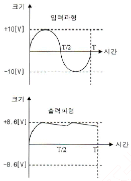
- 반파정류회로
- 유도성 중간탭 전파정류회로
- 2배압 정류회로
- 용량성 필터를 갖는 브리지 전파정류회로
(정답률: 84%)

2. 정류회로 출력 성분 중 교류인 리플을 제고하기 위해 정류회로 다음 단에 접속되는 회로는 무엇인가?
- 평활회로
- 클램핑회로
- 정전압회로
- 클리핑회로
(정답률: 76%)
3. 주어진 그림은 N-채널 FET 소자의 직류전달 특성을 나타내었다. 이 소자의 트랜스컨덕턴스는?
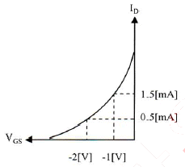
- 1.0[ms]
- 2.0[ms]
- 10[ms]
- 20[ms]
(정답률: 60%)
4. 입력 저항이 20[kΩ]인 증폭기에 직렬 전류 궤환회로를 적용할 경우 입력 저항값은 얼마가 되는가? (단, β=9이다.)(오류 신고가 접수된 문제입니다. 반드시 정답과 해설을 확인하시기 바랍니다.)
- 0.1[MΩ]
- 0.2[MΩ]
- 0.3[MΩ]
- 0.4[MΩ]
(정답률: 64%)
5. 다음 궤환회로에 대한 설명으로 틀린 것은?
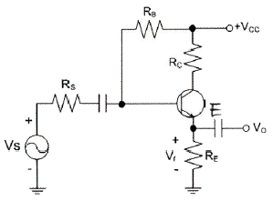
- 궤환으로 입력 임피던스는 감소한다.
- 궤환으로 전체 이득은 감소한다.
- 궤환으로 주파수 일그러짐이 감소한다.
- 궤환으로 출력 임피던스는 감소한다.
(정답률: 56%)
6. 다음 중 전력증폭기에 대한 설명으로 틀린 것은?
- 대신호 동작용으로 사용된다.
- 증폭기의 선형동작에 의해 고조파 왜곡이 생긴다.
- 고출력 증폭을 위해 사용된다.
- 부궤환 회로를 적용하면, 저왜곡 고출력이 가능하다.
(정답률: 50%)
7. 정궤환(Positive Feedback)을 사용하는 발진회로에서 발진을 위한 궤환루프(Feedback Loop)의 건은?
- 궤환루프의 이득은 없고, 위상천이가 180°이다.
- 궤환루프의 이득은 1보다 작고, 위상천이가 90°이다.
- 궤환루프의 이득은 1이고, 위상천이는 0°이다.
- 궤환루프의 이득은 1보다 크고, 위상천이는 180°이다.
(정답률: 73%)
8. 다음 그림과 같은 발진회로의 명칭은 무엇인가?
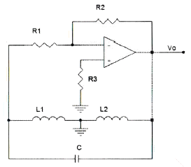
- 콜피츠발진회로
- LC발진회로
- 하틀리발진회로
- 클랩발진회로
(정답률: 77%)
9. 다음 중 정보 전송에서 반송파로 사용되는 정현파의 위상에 정보를 싣는 변조 방식은?
- PSK
- FSK
- PCM
- ASK
(정답률: 78%)
10. FM 변조에서 최대 주파수 편이가 80[kHz]일 때 주파수 변조파의 대역폭은 얼마인가?
- 40[kHz]
- 60[kHz]
- 80[kHz]
- 160[kHz]
(정답률: 80%)
11. RC 충ㆍ방전 회로에서 상승시간(Rise Time)이란 무엇인가?
- 출력전압이 최종값의 90[%]로부터 10[%]에 이르기까지 소요되는 시간
- 스위치를 넣은 후 출력전압이 최종값의 10[%]에서 90[%]까지 소요되는 시간
- 스위치를 넣은 후 출력전압이 최종값의 90[%]에서 100[%]까지 소요되는 시간
- 스위치를 넣은 후 출력전압이 최종값의 10[%]에 이르는데 소요되는 시간
(정답률: 85%)
12. 다음 그림과 같은 단안정 멀티바이브레이터 회로에서 콘덴서 C2의 역할은 무엇인가?
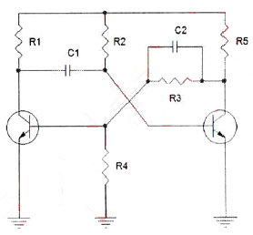
- 스위칭 속도를 빠르게 한다.
- 상태를 저장하는 메모리 기능을 한다.
- 트랜지스터의 베이스 전위를 일정하게 한다.
- 출력 파형의 진폭크기를 결정한다.
(정답률: 60%)
13. 2진법 곱셈 1010×0101의 계산값은?
- 0110010
- 1110001
- 0111001
- 0110001
(정답률: 76%)
14. 10진수 45를 2진수로 변환한 값으로 맞는 것은?
- 101100
- 101101
- 101110
- 101111
(정답률: 79%)
15. 다음 논리 함수
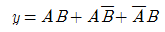
를 간소화한 것으로 옳은 것은?- A + B
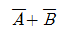
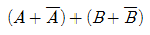
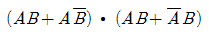
(정답률: 76%)
16. JK-Flip Flop에서 J입력과 K입력이 모두 1이고 CP=1일 때 출력은?
- 출력은 반전한다.
- Set 출력은 1, Reset 출력은 0이다.
- Set 출력은 0, Reset 출력은 1이다.
- 출력은 1이다.
(정답률: 76%)
17. 25진 리플 카운터를 설계할 경우 최소한 몇 개의 플립플롭이 필요한가?
- 4개
- 5개
- 6개
- 7개
(정답률: 84%)
18. 다음 중 리플 카운터(Ripple Counter)에 대한 설명으로 틀린 것은?
- 비동기 카운터이다.
- 카운트 속도가 동기식 카운터에 비해 느리다.
- 최대 동작 주파수에 제한을 받지 않는다.
- 회로 구성이 간단하다.
(정답률: 60%)
19. 여러 개의 회로가 단일 회선을 공동으로 이용하여 신호를 전송하는데 필요한 장치는?
- 멀티플렉서
- 디멀티플렉서
- 인코더
- 디코더
(정답률: 83%)
20. 반가산기(Half Adder)에서 A=1, B=1일 경우 S(Sum)의 값은?
- -1
- 1
- 0
- 2
(정답률: 73%)
2과목: 정보통신 시스템
21. 다음 괄호 안에 들어갈 장치의 이름을 순서대로 나열한 것은?
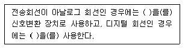
- CSU, DSU
- 모뎀, ONU
- DSU, CSU
- 모뎀, DSU
(정답률: 87%)
22. 다음 중 혼합형 동기식 전송방식에 대한 설명으로 옳지 않은 것은?
- 동기식 전송과 비동기식 전송을 혼합한 것이다.
- 문자와 문자 사이에 휴지 시간이 있다.
- 송신측과 수신측이 비동기 상태에 있어야 한다.
- 비동기식보다는 전송 속도가 빠르다.
(정답률: 85%)
23. 통신망의 구성 형태 중 성형(Star Type) 망의 장점이 아닌 것은?
- 전송 제어 기능이 간단하다.
- 각 터미널마다 전송속도를 다르게 설정할 수 있다.
- 한 터미널이 고장나면 전체 통신망에 영향을 준다.
- 집중 제어형이므로 보수와 관리가 용이하다.
(정답률: 80%)
24. 단말과 단말 사이를 하나하나의 회선으로 연결한 형태의 통신망은?
- 원형
- 트리형
- 메쉬형
- 버스형
(정답률: 79%)
25. 프로토콜에 관한 설명 중 틀린 것은?
- 컴퓨터를 이용한 온라인(on-line) 시스템 등장 이후 필요성이 제기되었다.
- 프로토콜의 기본구성은 구문(syntax), 패스(path), 의미(semantics)로 분류된다.
- 통신 프로토콜의 표준화가 제기되면서 국제전기통신연합(ITU)에서 공중패킷교환망용 X.25을 표준화하였다.
- 기능별 계층(layer)화 프로토콜 기술을 채택하는 네트워크 아키텍처로 발전하게 되었다.
(정답률: 88%)
26. 각종 제어문자들의 기능 중 데이터 블록의 전송이 끝나 논리적 링크를 해제할 때 사용되는 것은?
- ACK
- NAK
- ENQ
- EOT
(정답률: 77%)
27. OSI 참조모델에서 서비스 프리미티브의 유형이 아닌 것은?
- REQUEST
- INDICATION
- REVIEW
- RESPONSE
(정답률: 74%)
28. OSI 참조모델에서 하위 계층에서 상위 계층으로 데이터 패킷이 이동함에 따라 헤더는 어떻게 처리되는가?
- 삭제된다.
- 추가된다.
- 재배열된다.
- 변경된다.
(정답률: 79%)
29. 다음 중 디지털중계선 회로의 기능이 아닌 것은?
- Ringing
- Office Signaling
- Polar Conversion
- Generation of Frame Code
(정답률: 73%)
30. 동기식 다중화에 대한 설명으로 옳지 않은 것은?
- 프레임구조가 125[μs] 단위로 구성
- 계층화 구조 및 오버헤드(SOH, POH, PRT 등)의 체계적인 활용
- 포인터에 의한 동기화
- 다단계 다중화
(정답률: 64%)
31. 인터넷 사용의 급증과 전자상거래와 같은 다양한 서비스의 증가로 인터넷 보안의 중요성을 인식하게 되는데, 인터넷 보안을 위한 시스템 보안 장치에 해당되지 않는 것은?
- DDOS
- 방화벽
- IPS
- IDS
(정답률: 84%)
32. 디지털가입자회선(DSL)에서 사용하는 변복조방식인 DMT(Discrete Multi-Tone) 방식의 장점이 아닌 것은?
- 일반적인 FDM과 달리 각 반송파가 주파수영역상에서 서로 겹치도록 조밀하게 구성되므로 주파수효율이 좋다.
- 반송파개수가 증가함에 따라 각 부채널별 채널특성은 거의 평탄하게 되며, 따라서 심볼간 간섭이 최소화되고 등화기가 필요 없게 된다.
- 부채널별 심볼길이가 단일반송파 시스템의 경우에 비해 길어지므로 반향이나 심볼간 간섭(ISI)과 같은 시간상 간섭신호에 강하게 된다.
- 임펄스 잡음과 같은 광대역 잡음이 특정 부채널에 집중되어 처리되므로 전체적인 영향은 적어지게 된다.
(정답률: 45%)
33. 변조의 필요성을 설명한 것으로 옳지 않은 것은?
- 전송 채널에서 간섭과 잡음을 줄이기 위함이다.
- 송ㆍ수신용 안테나 길이를 늘이기 위함이다.
- 다중 통신을 하기 위함이다.
- 전송 효율의 향상을 위함이다.
(정답률: 81%)
34. FM 피변조파의 최대 주파수 편이가 60[kHz], 최대 변조신호 주파수가 15[kHz]일 때 FM 변조지수는 얼마인가?
- 3
- 4
- 5
- 6
(정답률: 90%)
35. 이동통신 기지국의 서비스 지역 확대 방법으로 옳지 않은 것은?
- 송신 출력을 증가시킨다.
- 저이득 무지향성 안테나를 사용한다.
- 다이버시티 수신기를 사용한다.
- 저잡음 수신기를 사용한다.
(정답률: 79%)
36. 다음 중 괄호 안에 들어갈 내용으로 적합한 것은?
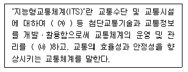
- ㈎ 무선 및 유선통신, ㈏ 과학화, 자동화
- ㈎ 전자ㆍ제어 및 통신, ㈏ 과학화, 자동화
- ㈎ 전자ㆍ제어 및 통신, ㈏ 지능화, 자동화
- ㈎ 무선 및 유선통신, ㈏ 지능화, 자동화
(정답률: 64%)
37. 정보통신시스템 분석의 목적에 관한 내용으로 맞지 않는 것은?
- 새로운 시스템 설계의 기초 자료를 얻는다.
- 비능률적이고 낭비적인 요소와 문제점을 발견할 수 있다.
- 시스템 또는 각 구성요소에 장애가 발생했을 때 회복을 위한 수리의 간편성, 정기적인 점검자료를 얻는다.
- 전산화에 따른 효과분석을 할 수 있는 기초자료를 얻는다.
(정답률: 54%)
38. 다음 중 대형장애가 동시에 발생하였을 경우 가장 나중에 처리해야 될 시스템은 무엇인가?
- MSC
- HLR
- BSC
- BTS
(정답률: 79%)
39. OSI 7계층 중 네트워크 계층에서 동작하는 장비는?
- Hub
- Repeater
- Modem
- Router
(정답률: 89%)
40. 보안의 중요성이 점차 증가하고 있다. 다음 중 보안 문제가 심각해지는 원인이 아닌 것은?
- 개방형 네트워크
- 폐쇄형 네트워크
- 인터넷의 확산
- 전자상거래 등 각종 응용서비스의 출현
(정답률: 91%)
3과목: 정보통신 기기
41. 2개의 전극(Anode와 Cathode) 사이에 삽입된 유기물층에 가해지는 전기장에 의해 발광하게 되는 것은?
- CRT
- OLED
- PDP
- TFT-LCD
(정답률: 90%)
42. 키보드의 조작 없이 프로그램을 수행하는 단말장치는?
- 디지타이저
- CAD/CAM
- Mouse
- COM/CAR
(정답률: 82%)
43. 최단 펄스시간 길이가 1,000×10-6[sec]일 때, 이 펄스의 변조속도는?
- 1[baud]
- 10[baud]
- 100[baud]
- 1,000[baud]
(정답률: 89%)
44. 컴퓨터가 어떤 터미널에 전송할 데이터가 있는 경우 터미널이 수신 준비가 되어 있는지를 물어 준비가 된 경우에 터미널에 데이터를 전송하는 것을 무엇이라 하는가?
- 폴링
- 셀렉션
- 링크
- 리퀘스트
(정답률: 81%)
45. 디지털 비트 구간의 1/2 지점에서 항상 신호와 위상이 변화하는 신호의 이름은?
- 맨체스터 코드
- 바이폴라 RZ
- AMI(Alternating Mark Inversion)
- NRZI(Non Return To Zero Inversion)
(정답률: 83%)
46. 다음 중 고속의 송신 신호를 다수의 직교하는 협대역 반송파로 다중화시키는 변조방식은?
- QAM
- CDMA
- OTDM
- OFDM
(정답률: 78%)
47. 다음 중 LAN 장비에서 물리층과 데이터링크층의 연결 장비가 아닌 것은?
- Router
- Bridge
- Repeater
- Hub
(정답률: 72%)
48. 다음 중 독립적으로 MAN이나 WAN을 구성하기에 부적절한 장비는?
- 이동전화시스템
- 교환기
- 인공위성
- Hub
(정답률: 76%)
49. 유선전화망에서 노드가 10개일 때 그물형(Mesh형)으로 교환회선을 구성시 링크 수를 몇 개로 설계하여야 하는가?
- 30개
- 35개
- 40개
- 45개
(정답률: 89%)
50. 다음 중 전화기의 기본 구성이 아닌 것은?
- 통화 회로
- 신호 회로
- 송수신 공용회로
- 측음 방지회로
(정답률: 69%)
51. 텔레포니의 핵심 기술인 VoIP의 구성요소로 거리가 먼 것은?
- 단말장치
- 게이트웨이
- 게이트키퍼
- 방향성 결합기
(정답률: 71%)
52. 다음 중 팩시밀리(Facsimile) 통신 방식인 G4 FAX에 대한 설명이 아닌 것은?
- Modified Huffman과 Modified Read 방식을 채용하여 데이터를 압축하는 기술을 사용하는 기종이다.
- A4 표준 원고를 전송하는데 약 3초 정도 소요된다.
- 광범위한 서비스와 다기능 문서 통신을 구현할 수 있다.
- 디지털망 접속용 Digital 팩시밀리이다.
(정답률: 71%)
53. 다음 중 CATV의 특성이라고 볼 수 없는 것은?
- 서비스는 지역적 특성이 높다.
- 전송 품질이 양호하다.
- 단방향 전송만 가능하다.
- 채널 용량이 증가한다.
(정답률: 78%)
54. 다음 중 위성 중계기의 구성요소가 아닌 것은?
- 송신부
- 수신부
- 헤드엔드
- 주파수 변환부
(정답률: 80%)
55. 지구국으로부터 통신위성까지의 거리가 36,000[km]일 때, 이 지구국에서 발사된 전파가 통신위성을 경유하여 지구국에 도착할 때까지 걸리는 이론적 시간은 얼마인가? (단, 지구국과 통신위성 장치에서 소요되는 시간은 고려하지 않음)
- 240[ms]
- 245[ms]
- 250[ms]
- 255[ms]
(정답률: 76%)
56. 이동통신에서 전파음영지역을 해소하기 위한 설명으로 올바르지 않은 것은?
- 중계기를 사용한다.
- 반사기를 사용한다.
- Discone 안테나를 사용한다.
- 무지향성 안테나를 사용한다.
(정답률: 72%)
57. 다음 중 멀티미디어 디지털 콘텐츠의 저작권 보호를 위한 ‘디지털 워터마킹’에 대한 설명으로 옳지 않은 것은?
- 비가시성으로 눈에 띄지 않아야 한다.
- 왜곡 및 잡음에 강해야 된다.
- 인식을 위해서 원본을 가지고 있어야 한다.
- 최소의 bit를 사용해야 한다.
(정답률: 80%)
58. 다음 중 정지 및 이동환경에서 고속으로 인터넷에 접속하여 멀티미디어 콘텐츠를 이용할 수 있는 것은?
- DMB
- WiBro
- RFID
- GPS
(정답률: 82%)
59. 다음 중 메시지 통신시스템(MHS : Message Handling System)의 구성요소에 해당하지 않는 것은?
- User Agent
- Message Transfer Agent
- Message Store
- Codec
(정답률: 86%)
60. TV 전파 사이의 빈틈인 수직귀선소거 시간을 이용하여 정보를 전송하는 것은?
- Telex
- Teletext
- Viedotex
- MHS
(정답률: 69%)
4과목: 정보전송 공학
61. 채널의 대역폭이 1,000[Hz]이고 신호대 잡음비가 3일 경우 채널용량은 얼마인가?
- 1,500[bps]
- 2,000[bps]
- 2,500[bps]
- 3,000[bps]
(정답률: 69%)
62. 18[kHz]까지 전송할 수 있는 PCM 시스템에서 요구되는 Nyquist 표본화 주파수는?
- 9[kHz]
- 18[kHz]
- 36[kHz]
- 72[kHz]
(정답률: 81%)
63. 다음 중 양자화 비트수가 6비트이면 양자화 계단수(M)는 얼마인가?
- 16
- 64
- 32
- 8
(정답률: 81%)
64. 신호가 f(t) = 4 + 5cos20πt + 3sin20πt 일 때, f(t)의 평균전력은 몇 [W]인가?
- 23[W]
- 33[W]
- 43[W]
- 53[W]
(정답률: 66%)
65. 다음 중 동축 케이블의 특징으로 알맞지 않은 것은?
- 협대역 전송에 이용되며 근단누화가 많이 발생한다.
- 고주파에서는 외부도체의 차폐가 우수하며 누화 특성이 개선된다.
- 내부도체와 외부도체의 절연이 극히 좋아 전력전송이 가능하다.
- 저주파에서는 누화가 발생하기 때문에 60[kHz] 이하에서는 사용하지 않는다.
(정답률: 68%)
66. 제한대역매체를 통해 기본파와 제3고조파를 포함하는 디지털 신호를 전송하는데 필요한 대역폭은 얼마인가? (단, n[bps]로 디지털 신호를 보내고자 한다.)
- n[Hz]
- 2n[Hz]
- 4n[Hz]
- 6n[Hz]
(정답률: 82%)
67. 다음 중 DS CDMA에 대한 설명으로 틀린 것은?
- 원근단 간섭문제를 해결해야 성능이 향상된다.
- 상호상관함수의 값이 클수록 좋은 성능이 얻어진다.
- 사용자 상호간에 직교성을 가진 확산부호를 사용한다.
- 주파수 사용효율이 높다.
(정답률: 67%)
68. 다음 중 WiBro의 기술 규격 표준화 단체는?
- IEEE
- ISO
- ETSI
- 3GPP
(정답률: 78%)
69. 다음 중 다량의 데이터를 고속 전송하는 컴퓨터와 주변장치간에 사용되는 방식은?
- 단방향 전송
- 직렬 전송
- 반이중 전송
- 병렬 전송
(정답률: 75%)
70. BSC(Binary Synchronous Communication) 프로토콜의 특징이 아닌 것은?
- 사용 코드에 제한이 있다.
- 동일한 통신 회선상의 터미널은 동일한 코드를 사용한다.
- 전이중 전송 방식만 가능하다.
- 전파 지연 시간이 긴 선로에서는 비효율적이다.
(정답률: 81%)
71. 통신망 내에서 통화 연결의 회선 설정 및 운용을 제어하기 위해 필요한 정보를 주고받는 과정을 신호방식이라고 한다. 다음 중 신호 방식의 설명으로 맞지 않는 것은?
- 신호방식은 사용구간에 따라 가입자선 신호방식과 국가 신호방식으로 구분된다.
- 가입자선 신호방식으로 DP, DTMF, CCIS가 있다.
- 국간 신호방식은 통화로와 공통선 신호방식으로 구분된다.
- 공통선 신호방식은 NO.6, NO.7이 있으며 지능망의 출현에 기여하였다.
(정답률: 56%)
72. 다음 중 기저대역 전송 부호 조건으로 틀린 것은?
- 전송 대역폭이 넓어야 한다.
- 전송 부호의 코딩 효율이 양호해야 한다.
- 타이밍 정보가 충분히 포함되어야 한다.
- DC성분이 포함되지 않아야 한다.
(정답률: 61%)
73. IPv4에서 B클래스의 경우 IP주소 범위를 바르게 나타낸 것은?
- 0.0.0.0 ~ 127.255.255.255
- 128.0.0.0 ~ 191.255.255.255
- 192.0.0.0 ~ 223.255.255.255
- 224.0.0.0 ~ 239.255.255.255
(정답률: 83%)
74. 다음 중 TCP와 UDP 헤더의 구조에 대한 설명으로 틀린 것은?
- TCP 세그먼트의 헤더는 8바이트인 반면, UDP는 20바이트의 크기를 갖는다.
- TCP 포트 번호는 UDP 포트 번호와 서로 독립적이다.
- TCP에서는 강제적으로 검사합(checksum)을 수행하는 반면, UDP는 검사합을 선택적으로 수행한다.
- UDP는 비연결형 방식이고, TCP는 연결형 방식이다.
(정답률: 80%)
75. 다음 중 라우팅 프로토콜이 아닌 것은?
- BGP(Border Gateway Protocol)
- EGP(Exterior Gateway Protocol)
- SNMP(Simple Network Management Protocol)
- RIP(Routing Information Protocol)
(정답률: 81%)
76. 다음의 내용을 가장 잘 설명하는 것은?
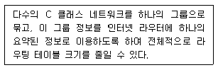
- CIDR
- 사설 어드레싱(Private Addressing)
- NAT
- IPv6
(정답률: 65%)
77. 통신속도가 2,000[bps]인 회선에서 1시간 전송했을 때, 에러 비트수가 36[bit]였다면, 이 통신회선의 비트 에러율은 얼마인가?
- 2.5×10-6
- 2.5×10-5
- 5×10-6
- 5×10-5
(정답률: 80%)
78. 데이터 링크 프로토콜에 해당되지 않는 것은?
- HDLC
- SNMP
- LAP-B
- BSC
(정답률: 63%)
79. 다음 중 응용프로세서 사이의 원활한 정보교환을 위한 부가가치를 제공하며, 응용프로그램간의 논리적 연결을 확립하고 관리하는 계층은?
- 물리계층
- 네트워크계층
- 전달계층
- 세션계층
(정답률: 74%)
80. 다음 중 IEEE 802.3 프로토콜에 해당하는 것은?
- CSMA/CD
- Token Bus
- Token Ring
- Frame Relay
(정답률: 71%)
5과목: 전자계산기일반 및 정보통신설비기준
81. 다음 중 1비트(Bit)를 저장할 수 있는 기억장치는?
- Register
- Accumulator
- Filp-Flop
- Delay
(정답률: 70%)
82. 아래 스위칭 회로의 논리식으로 옳은 것은?
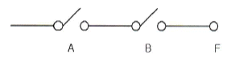
- F = A + B
- F = A ㆍ B
- F = A - B
- F = A / ( B + A )
(정답률: 78%)
83. 2진수 0.111의 2의 보수는 얼마인가?
- 0.001
- 0.010
- 0.011
- 1.001
(정답률: 59%)
84. 프로그램에서 함수들을 호출하였을 때 복귀주소(Return Address)를 보관하는데 사용하는 자료구조는 어느 것인가?
- 스택(Stack)
- 큐(Queue)
- 트리(Tree)
- 그래프(Graph)
(정답률: 80%)
85. 다음 지문에서 설명하고 있는 운영체제의 종류는?
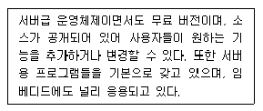
- 유닉스(Unix)
- 리눅스(Linux)
- 윈도우즈(Windows)
- 맥(Mac) O/S
(정답률: 84%)
86. 대기 중인 프로세서가 요청한 자원들이 다른 대기 중인 프로세스에 의해서 점유되어 다시 프로세스 상태를 변경시킬 수 없는 경우가 발생하게 되는데 이러한 상황을 무엇이라 하는가?
- 한계 버퍼 문제
- 교착상태
- 페이지 부재상태
- 스레싱(Thrashing)
(정답률: 77%)
87. 다음 중 컴파일러(Compiler) 언어에 대한 설명으로 틀린 것은?
- 문제중심의 고급언어
- 프로그램 작성과 수정이 용이
- 기계중심의 언어
- 컴퓨터 기종에 관계없이 공통사용
(정답률: 60%)
88. 다음 중 프로그램의 종류에 대한 설명으로 틀린 것은?
- 베타버전이란 개발자가 상용화하기 전에 테스트용으로 배포하는 것을 말한다.
- 쉐어웨어란 기간이나 기능 제한 없이 무료로 사용하는 것을 말한다.
- 데모버전이란 기간이나 기능의 제한을 두고 무료로 사용하는 것을 말한다.
- 테스트버전이란 데모버전 이전에 오류를 찾기위해 배포하는 것을 말한다.
(정답률: 76%)
89. 다음 중 중앙처리장치에서 사용하고 있는 버스(BUS)의 형태에 속하지 않는 것은?
- Address Bus
- Control Bus
- Data Bus
- System Bus
(정답률: 66%)
90. 다음 지문은 인터럽트 처리과정을 나타낸 것이다. 처리과정의 순서를 올바르게 나열한 것은?
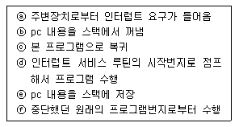
- ⓐ → ⓓ → ⓑ → ⓒ → ⓕ → ⓔ
- ⓐ → ⓔ → ⓓ → ⓑ → ⓒ → ⓕ
- ⓔ → ⓐ → ⓓ → ⓑ → ⓒ → ⓕ
- ⓔ → ⓐ → ⓑ → ⓓ → ⓒ → ⓕ
(정답률: 77%)
91. 전기통신사업자가 법원ㆍ검사ㆍ수사관서의 장, 정보수사기관의 장으로부터 재판, 수사, 형의집행 또는 국가안정보장에 대한 위해를 방지하기 위한 정보수집을 위하여 자료의 열람이나 제출을 요청 받을 때에 응할 수 있는 대상이 아닌 것은?
- 이용자의 성명과 주민등록번호
- 이용자의 주소와 전화번호
- 이용자의 아이디
- 이용자의 동산 및 부동산
(정답률: 87%)
92. 다음 중 방송통신을 통한 국민의 복리 향상과 방송통신의 원활한 발전을 위하여 수립하고 공고하는 방송통신기본계획에 포함되는 사항이 아닌 것은?
- 방송통신서비스에 관한 사항
- 방송정보통신공사업의 연구에 관한 사항
- 방송통신콘텐츠에 관한 사항
- 방송통신기술의 진흥에 관한 사항
(정답률: 75%)
93. 다음 중 가장 무거운 벌칙을 처벌받는 대상은?
- 공익을 해할 목적으로 전기통신설비에 의하여 공연히 허위의 통신을 한 자
- 타인에게 손해를 가할 목적으로 전기통신설비에 의하여 공연히 허위의 통신을 한 자
- 전기통신업무에 종사하는 자가 공익을 해할 목적으로 전기통신설비에 의하여 공연히 허위의 통신을 한 자
- 자기 또는 타인에게 이익을 목적으로 전기통신설비에 의하여 공연히 허위의 통신을 한 자
(정답률: 69%)
94. 다음의 방송통신관련 설비 중 접지를 하지 않아도 되는 것은?
- 전도성이 있는 인장선을 사용하는 전력선 반송케이블
- 금속성 함체로 내부에 전기적 접속을 하는 경우
- 광섬유케이블로 전도성이 없는 인장선을 사용하는 경우
- 중계기에 전원 공급을 병행하는 케이블 방송용 동축케이블
(정답률: 84%)
95. 다른 사람의 위탁을 받아 공사에 관한 조사ㆍ설계ㆍ감리ㆍ사업관리 및 유지 관리 등의 역무를 하는 것을 무엇이라 하는가?
- 도급
- 수급
- 용역
- 감리
(정답률: 69%)
96. 발주자는 누구에게 공사의 감리를 발주하여야 하는가?
- 감리원
- 정보통신기술자
- 용역업자
- 도급업자
(정답률: 71%)
97. 다음 중 정보통신공사의 하도급의 범위는 어떤 기준으로 산정하는가?
- 공사금액
- 공사기간
- 공정 또는 구간
- 공사 종사자
(정답률: 69%)
98. 다음 중 정보통신공사업의 등록이 취소되는 경우는?
- 정보통신기술자를 공사현장에 배치하지 아니한 경우
- 상호, 명칭을 변경한 경우에 거짓으로 신고한 경우
- 부정한 방법으로 정보통신공사업을 등록을 한 경우
- 하도급할 수 있는 공사 범위를 넘어 하도급한 경우
(정답률: 81%)
99. 정보통신공사업자는 도급받은 공사의 얼마를 초과하여 다른 공사업자에게 하도급해서는 안되는가?
- 100분의 10
- 100분의 30
- 100분의 50
- 100분의 70
(정답률: 79%)
100. 모든 이용자가 언제 어디서나 적절한 요금으로 100.제공 받을 수 있는 기본적인 전기통신역무를 무엇이라 하는가?
- 정보통신 역무
- 전기통신 역무
- 보편적 역무
- 특수통신 역무
(정답률: 69%)